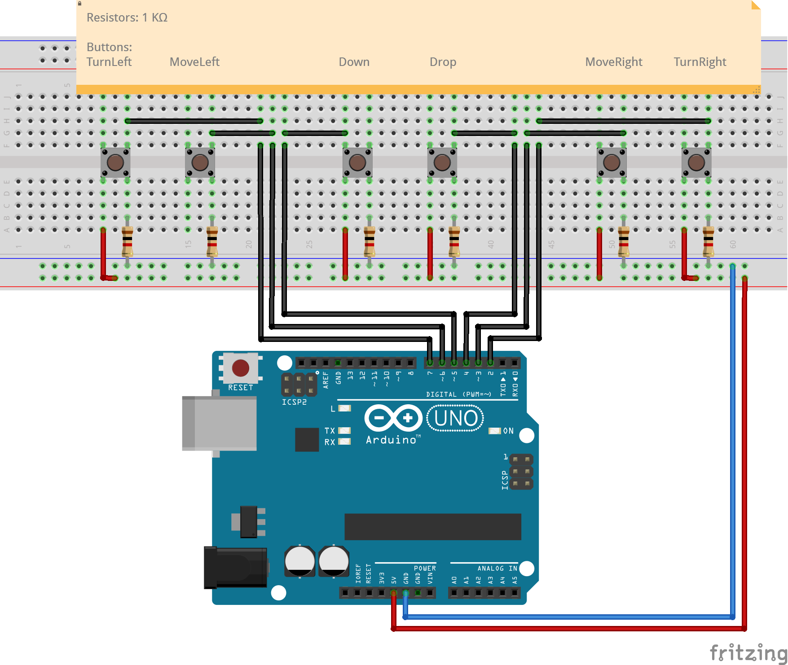

| Display | LED-Matrix, direkt angesteuert |
|---|---|
| Eingabe | 6 Taster (Links, Rechts, Unten, Drop, Links Drehen, Rechts Drehen) |
Programmieren Tetris in Arduino & C
Tetris auf dem Arduino?
Im Rahmen eines Hackathons an der Hochschule habe ich eine minimalistische, aber voll spielbare Version von Tetris für den Arduino entwickelt. Die erste Version entstand auf dem Arduino Uno R4, später folgte die Portierung auf den Uno Rev3, was einige technische Änderungen nötig machte.
Technische Daten
Umsetzung
Code
v1.0
Für den Hackathon, habe ich eine Tetris Bibliothek in Cpp entwickelt. Diese basierte auf dem template struct GameState welches alle wichtigen Daten einer runde speicherte und eine Tick-Methode bereitstellte um das spiel zu treiben. Es hat auch eine Methode bereitgestellt um das aktuelle Feld entweder als string oder liste zu bekommen um es anzeigen zu können.
Um die Nutzereingabe zu lesen werden 2 Typen exportiert: Buttons und Button. Button ist ein Enum welches alle Knöpfe auflistet und je einem Bit in einem Byte zuordnet, sodass alle möglichen Eingaben gleichzeitig und speichersparend verarbeitet werden können, da sie nun in einen Byte (Buttons) passen. Das ermöglicht schnelle Abfragen und kompakte Logik. Man kann sich dieses Flaggen-System vorstellen wie 8 boolesche Werte in einer Variable. Man kann diese Werte mit Bit shifts ( << ) und Bit-Oder ( | ) setzen und mit Bit shifts und Bit-Und ( & ) lesen. (Mehr Dazu)
Die einzelnen Tetrinos sind in einem Enum als Indexe zu einem Array, welcher Postions-Matrizen der Tetrinos speichert. Um auch Position & Rotation zu speicher wird TetPos benutzt.
};
typedef uint8_t Buttons;
enum class Button : uint8_t {
TurnLeft = 1, // 00000001
TurnRight = 2, // 00000010
Up = 4, // 00000100
Down = 8, // 00001000
Left = 16, // 00010000
Right = 32, // 00100000
Swap = 64, // 01000000
};
struct Vec2 {
int8_t x, y;
};
enum class Rotation : uint8_t {
None = 0,
CounterClock = 1,
Mirror = 2,
Clock = 3,
};
};
}; // Index für Array
// ... Die anderen Tetrinos ...
static constexpr const std::array<Vec2, 4> T = { Vec2{0, 0}, {0, -1}, {-1, 0}, {1, 0} };
static constexpr const std::array<Vec2, 4> Tetrinos[] = { L, R_L, I, Z, R_Z, B, T };
Diese Version hatte noch viele Probleme
- Sie basierte auf Cpp Standard Arrays, welche in vielen Arduinos nicht unterstützt sind.
- Es gab keine Trennung von Nutzereingabe (Links/Rechts etc.) und Spieländerung (dem natürlichen Fallen), da es nur eine Tick-Methode gab.
- Die Randomisierung ließ zu wünschen übrig.
Nachbereitung
Als Nachbereitung habe ich eine zweite Version entwickelt. Bei dieser Version hatte ich die Möglichkeit die oben genannten Fahler zu beheben. Deshalb habe ich auf folgendes geachtet
- So wenig Cpp STL wie möglich
- Separierung von Spieler-Eingabe-Physik und Idle-Physik
- Bessere Tetrinoverteilung
Cpp STL
Da ich mich von std::array getrennt habe musste ich eine andere Speichermethode finden.
Die simple Änderung wären C-Style Arrays, welche TODO:.
Eine andere Option wäre eine BitListe. TODO: Erklärung
Letzten Endes habe ich mich für C-Style Arrays entschieden, da performance kein Problem war und ich die Tetris Größe nicht einschränken will.
neue dual tick Architektur
Da bei v1 die Playeraction und Gameaction zusammen ausgeführt wurden, war weder eine Schwierigkeits anpassung möglich noch war es möglich Die Spielereingabe oft genug abzufragen um das spiel flüssig zu machen, da sont alle blöcke viel zu schnell fallen würden.
Deswegen gibt es nun 2 Tick-Funktionen: game_tick und player_tick
-template <size_t H, size_t W> struct GameState {
std::array<uint8_t, H * W> blocks;
std::array<Tetrino, 3> nexts;
TetPos current_tet;
bool placed;
const bool debug;
constexpr static const size_t height = H;
constexpr static const size_t width = W;
GameState();
GameState(bool debug);
bool tick(uint8_t buttons);
bool isGameOver();
Tetrino get_next();
void init_nexts();
static Tetrino new_next();
std::array<uint8_t, W * H> get_curr_field();
private:
inline void _new_tetrino();
inline void _turn_tetrino(uint8_t buttons);
inline void _move(uint8_t buttons);
void inline _move_down_once();
void inline _move_left_once();
void inline _move_right_once();
inline void _place();
inline void _remove_rows();
template <size_t len> bool _collides(std::array<Vec2, len> vecs);
bool _can_move_down();
bool _can_move_left();
bool _can_move_right();
};
Tetrinoverteilung mit Bag system
Ein weiteres Problem von v1 war auch die Tetrinoverteilung. Teils konnten Gewisse Tetrinos 6 mal hintereinander oder garnicht kommen.
Um das zu lösen Wurde ein "TetrinoBag" implimentiert, welcher folgendes Interface hat:
er funktioniert: TODO: Beschreibung
Hardware

Ergebnis
How to Run
Requirements:
-
Sourcecode (Download)
-
Ein C & Cpp Compiler wie clang
Step by Step
- Go to Project Folder
- Build nob.c (= buildsystem) to nob executable
clang -o nob nob.c - run nob executable
Lessons Learned
Ohne OS viel weniger zur verfügungKompliance mit STL ist stark underschiedlich
...
???
*Arduino stuff
Das Tetris-Spiel wurde in C programmiert und auf einem Arduino ausgeführt. Die Anzeige erfolgt auf dessen eingebauten LED-Matrix, während die Steuerung durch externe Tasten ermöglicht wird. Bei der Gestaltung der Verbindungen wurde besonderes Augenmerk auf die Kompaktheit und Benutzerfreundlichkeit gelegt. Die Verbindungskabel wurden so verlegt, dass sie nicht vertikal aus dem Breadboard herausragen und die Buttons verdecken. Sie sind kompakt und an einer Stelle zusammengeführt welche vom Breadboard zum Arduino führt, um eine effiziente und übersichtliche Verkabelung zu gewährleisten.
Das eindimensionale Button-Layout wurde so gestaltet, dass die Eingabe intuitiv erfolgt: Links entspricht „links“, rechts entspricht „rechts“ und der vertikale Button befindet sich in der Mitte. Ebenso sind die Rotationen neben der jeweiligen Bewegung.
*Code und explainer animation
Das Spielfeld wurde als eindimensionales Array gespeichert, um im Stack zu bleiben und eine möglichst effiziente Nutzung des CPU-Caches zu ermöglichen. Alle Zeilen wurden hintereinander angeordnet, sodass der Index i=x+x*y gilt, wobei alle Variablen positive ganze Zahlen, einschließlich 0, sein können. Zudem müssen die Werte für x kleiner als die Spielfeldbreite und y kleiner als die Spielfeldhöhe sein.
Ein Bitflag-System ermöglicht es, mehrere Tasten in einem einzelnen Byte (8 Bits) zu speichern und zu verwalten, wobei jeder Bitwert eine bestimmte Taste repräsentiert. Dies wird durch die Verwendung von Bitmasken erreicht, bei denen jede Taste mit einem einzelnen Bit im Byte verknüpft ist.
Im gegebenen Code wurde ein enum für die Tastenbelegungen definiert. Dabei bekommt jede Taste einen Wert, der eine Potenz von 2 darstellt. Dadurch wird jeder Wert einer einzigen Bitposition im Byte zugewiesen: